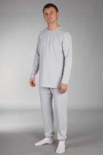

электронный
ресурс по учебной дисциплине 1-58 01 01 - "ИНЖЕНЕРНО-ПСИХОЛОГИЧЕСКОЕ ОБЕСПЕЧЕНИЕ ИНФОРМАЦИОННЫХ ТЕХНОЛОГИЙ"
|
||
| Оглавление | Программа | Теория | Практика| Контроль знаний | Об авторах | ||
|
Содержание
ТЕМА 2 СВЕРХЧИСТЫЕ ЭЛЕКТРОННЫЕ ПРОИЗВОДСТВА § 2.1 Назначение и описание чистых помещений. § 2.2 Воздушный поток в чистых помещениях. § 2.3 Использование чистых помещений в электронной промышленности § 2.1 Назначение и описание чистых помещений. Возрастающие требования к надёжности и чистоте изделия (продукта), а также увеличивающаяся миниатюризация и автоматизация процессов ставят сегодня всё более высокие требования к чистоте технологической среды. Именно чистые помещения в полной мере отвечают этим высоким требованиям и являются показателем высоких технологий производства, обеспечения качества. Они широко применяются в различных отраслях промышленности: электронной, оптической, радиотехнической, космической, машиностроении и приборостроении, производстве лекарственных средств и косметики, продуктов питания, в лечебных учреждениях. Чистым помещением или чистой комнатой называется помещение, в котором счётная концентрация взвешенных в воздухе (аэрозольных) частиц и, при необходимости, число микроорганизмов в воздухе поддерживаются в определённых пределах. Под частицей понимают твердый, жидкий или многофазный объект или микроорганизм с размерами от 0,005 до 100 мкм. При классификации чистых помещений рассматривают частицы с нижними пороговыми размерами от 0,1 до 5,0 мкм. Ключевым фактором является то, что чистые помещения характеризуются именно счётной концентрацией частиц, то есть числом частиц в единице объема воздуха, размеры которых равны или превышают определённую величину (0,1; 0,3; 0,5 мкм и т. д.). Этим они отличаются от обычных помещений, в которых чистота воздуха оценивается по массовой концентрации загрязнения в воздухе. Отсюда вытекают особенности поддержания и определения показателей чистоты, специфические требования к контрольным приборам, счетчикам частиц в воздухе и пр.х поступления из вне, а именно: конструктивные решения, относящиеся к оборудованию, строительным элементам ограждения инженерным системам ограждения вокруг элементов, генерирующих частицы улавливание (локализация) загрязнений непосредственно на месте их образования использование персоналом специализированной одежды для чистых помещений. Для регулирования и контроля уровня загрязнений воздуха после обеспечения вышеуказанных действий в технологии чистых помещений используют сочетание трёх принципиальных подходов: организацию воздушных потоков, фильтрацию воздуха, и обеспечение перепада давления между помещениями. При строительстве чистых помещений необходимо выполнять не только требования к материалам, технологии, конструкциям, оборудованию и приборам, но и уметь их правильно выбрать и применить. Очень важно соблюдать и требования по монтажу всех вышеназванных элементов, чтобы свести к минимуму образование загрязнений. При этом важно находить экономичные решения. Можно выделить основные особенности помещений такого типа: 1. в воздушной среде контролируется концентрация частиц (и/или максимально допустимое количество жизнеспособных микроорганизмов) 2. в таком помещении сведено к минимуму поступление частиц извне 3. сведено к минимуму выделение и удержание частиц 4. контролируются и управляются другие параметры воздушной среды - температура, влажность, давление 5. обеспечены параметры гигиенические - по необходимому притоку свежего воздуха 6. для чистых помещений обеспечены эргономические параметры - такие как освещенность, уровень шума и др. Класс чистоты помещения. Основной характеристикой помещений, относящихся к чистым, является его класс, который характеризует степень чистоты воздуха в нем. Классификация приведена в вышеупомянутых стандартах и имеет ряд отличительных особенностей, применительно к тем отраслям, где эти стандарты используются. Например, нормированию количества жизнеспособных микроорганизмов в чистом помещении придается большое значение в фармацевтической, пищевой промышленности и в медицинской практике, а в других областях промышленности этот параметр не является определяющим для такого помещения. Вышеупомянутые классы характеризуют степень чистоты воздуха в «чистой» комнате. Классификация чистых комнатимеет ряд отличительных особенностей. Класс 1: Производство интегральных микросхем. Класс 10: Производство интегральных микросхем с расстоянием между проводниками менее 2 мкм. Класс 100 Асептическое производство инъекционных препаратов, требующее отсутствия микроорганизмов и частиц. Хирургические операции по имплантации или трансплантации органов. Изоляция пациентов с иммунным дефицитом, в том числе после пересадки костного мозга. Класс 1000: Производство оптических элементов высокого класса. Сборка и испытания прецизионных гироскопов. Сборка миниатюрных подшипников. Класс 10000: Пластиковое производство, сборка прецизионного гидравлического и пневматического оборудования, клапанов с сервоприводами, высокоточных часовых механизмов, трансмиссий высокого качества. Класс 100000: Оптическое производство, сборка электронных компонентов, сборка гидравлических и пневматических устройств. ГОСТ ИСО 14644-1-2000 определяет три состояния чистых помещений: - построенное чистое помещение (as-built); - оснащенные чистые помещения (as-rest); - эксплуатируемые чистые помещения ( operational). Для каждого из указанных состояний чистых помещений необходимо свое минимально достаточное количество условий (по возрастающей), при исполнении которых соблюдается заявленный класс чистоты. Архитектурно-строительные решения. В основе архитектурно - строительных решений при создании помещения определенного класса чистоты лежит принцип построения "комната в комнате" с формированием ограждающими элементами чистого помещения двух зон внутри оснащаемых помещений: 1. Рабочей зоны, образованной пространством, ограниченным: снизу - полом; a) с боковых сторон - герметизированными стеновыми ограждающими конструкциями; b) сверху - герметизированными потолочными ограждающими конструкциями. В рабочей зоне чистого производственного помещения размещается технологическое оборудование, рабочий продукт и обслуживающий персонал. 2. Технической зоны чистого помещения, образованной пространством между: a) потолочными ограждающими конструкциями чистого помещения и потолочными перекрытиями исходных помещений; b) герметизированными стеновыми ограждающими конструкциями чистого помещения и стенами исходных помещений. В технической зоне размещаются элементы систем комплекса технического оборудования, обеспечивающие требуемые параметры воздушной среды. Чистые производственные комнаты позволяют решить такие задачи как: - комната сводит к минимуму поступление внутрь помещения различных веществ и частиц из окружающей среды, а так же выделение частиц из них; - комната дает возможность установить контроль таких параметров окружающей воздушной среды как температура воздуха, его влажность и давление; - стерильная комната обеспечивает установленные гигиенические параметры; - такая комната дает возможность установить необходимый приток воздуха; - обеспечение поддержания необходимых эргономических параметров помещений, включая освещение и установленный уровень шума. Однако самой главной задачей, которую решают чистые производственные комнаты, является поддержание чистоты. Здесь главную роль играет правильное проектирование. Если проектирование выполнено грамотно, то в комнате возникнет избыточное, по отношению к смежным с ней комнатам, давление, что является принципом поддержания чистоты. Это обеспечивается за счет правильно выбранных воздушных установок, которые создают в чистых комнатах определенный дисбаланс воздуха, то есть разницу между его притоком и вытяжкой. Стоит заметить, что проектирование чистых помещений должно учитывать и расположение комнаты внутри здания. Например, при расположении чистых помещений в центре здания, количество поступающего чистого воздуха должно превышать его вытяжку как минимум на 20 % . Если же при проектировании разработана конструкция чистых помещений, предусматривающая окна с остеклением, допускающим инфильтрацию, то приток должен быть выше не менее чем на 30 %. Проектирование стерильных помещений – процесс долгий и трудоемкий, поэтому рассмотрим его в деталях. В первую очередь стоит заметить, что такие производственные помещения разрабатываются в соответствии с технологией и определенными стандартами, которые позволяют максимально сократить концентрацию загрязняющих частиц. Однако стоит помнить, что в зависимости от сферы применения чистых помещений стандарты и регулирующие их нормативно-правовые акты определяют свои допустимые нормы концентрации частиц. Именно поэтому проектирование чистых комнат и крупных стерильных помещений для каждого конкретного объекта осуществляется индивидуально с учетом всех его особенностей. Вместе с тем, проектирование чистых помещений, независимо от их назначения, должно проходить в соответствии с рядом общих правил: 1. чистая комната предусматривает точный расчет обеспечения необходимого воздухообмена, допустимого уровня температуры, давления и влажности, а также расчет максимально допустимой концентрации пыли, различных веществ и микроорганизмов; 2. чистая комната предусматривает обязательное создание и установку систем качественной очистки внутреннего воздуха (специальных фильтров), позволяющих рационально и эффективно распределять воздушные массы между модулями; 3. чистая комната делает обязательными работы по проектированию, предусматривающему разделение модулей чистых помещений не только друг от друга, но и от строительной конструкции здания в целом. По завершении работ по проектированию и планировке чистых помещений, конструкцию необходимо собрать. Однако стоит помнить, что конструктивные особенности будут зависеть от целевого и функционального назначения чистых помещений, а также размеров планируемого для установки оборудования. Кроме того, проектирование чистых комнат подразумевает, что в каждой конструкции, не зависимо от ее параметров, обязательно должны быть установлены следующие системы: - комната предусматривает систему герметизации; - комната предусматривает систему подготовки, очистки и распределения воздушных масс в комнате; - комната предусматривает систему установки и поддержания оптимального микроклимата помещения. Установка данных систем позволяет обеспечить движение воздушных масс из помещений с высоким уровнем чистоты в другие, смежные комнаты с более низкой степенью чистоты по мере убывания предъявляемых к ним технологических требований. Уже в завершении работ по проектированию чистых помещений, на основании готового генерального проекта разрабатывается чертеж размещения сэндвич-панелей, дверей, смотровых и передаточных окон, неро боксов и фильтродержателей, светотехники и пола. Вслед за этим, на основании размеров, рассчитанных при проектировании, изготавливаются стеновые и потолочные панели; панели, предусматривающие трубы для кабелей; панели с отверстиями, подготовленными для установки передаточных и смотровых окон; дверей; фильтродержателей и так далее. В идеале базовая конструкция чистых помещений должна включать в себя следующие элементы: - комната предусматривает ограждающие стеновые конструкции помещения (каркас, глухие и остекленные стеновые панели, двери, окна); - комната предусматривает герметичные потолки, независимо от категории; - комната предусматривает элементы встроенной светотехники; - комната предусматривает половое покрытие помещения с антистатическими свойствами; - комната предусматривает систему подготовки воздуха, включая приточные, вытяжные и рециркуляционные вентиляционные установки, воздухозаборное оборудование, воздухораспределительное оборудование с финишными фильтрами, воздухорегулирующие устройства, автоматическое оборудование и так далее; - комната предусматривает фильтро-вентиляторные модули, создающие чистые зоны внутри комнаты. - комната предусматривает систему управления системами чистых помещений; - комната предусматривает систему воздушных шлюзов помещения и передаточные окна. Далее, в зависимости от назначения, производственные чистые помещения комплектуются различным оборудованием и дополнительными приспособлениями, включая оборудование для водоподготовки, AHU системы помещений, ламинированные шкафы, ламинированные укрытия и так далее. Рисунок 2.1 – Чистое помещение для производства микроэлектронных компонентов § 2.2 Воздушный поток в чистых помещениях. Для уменьшения загрязнения в чистых помещениях высокого класса применяются специальные системы вентиляции, при которых поток воздуха движется сверху вниз без турбулентностей, то есть ламинарно. При ламинарном потоке воздуха частицы грязи от людей и оборудования не разлетаются по всему помещению, а собираются потоком у пола.
Рисунок 2.2 – Пример потоков воздуха в чистой комнате с турбулентной организацией вентиляции
Рисунок 2.3 – Потоки воздуха в чистой комнате с ламинарной организацией вентиляции Области применения. Чистые помещения, несмотря на единое для всех отраслей назначение и сходную структуру, имеют отличительные особенности при применении в различных областях: 1. Чистые помещения в медицине 2. Чистые помещения в фармацевтике 3. Чистые помещения в пищевой промышленности 4. Чистые помещения в электронной промышленности Так, например, в медицине и пищевой промышленности определяющим фактором чистоты воздушной среды в чистом помещении является отсутствие микробиологических загрязнений. В некоторых других областях промышленности наоборот, наличие микроорганизмов в воздухе чистого помещения имеет не столь критичное значение, как присутствие аэрозольных частиц, которые могут оказывать решающее влияние на качество выпускаемого продукта. В фармацевтической отрасли имеет значение наличие в воздухе как микробиологических загрязнений, так и аэрозольных частиц. В последнее время в медицинской практике находят все большее применение технические комплексы, обеспечивающие в помещениях ЛПУ качественную воздушную среду, практически лишенную микробного загрязнения – чистые помещения. Чистые помещения являются эффективным средством предупреждения внутрибольничной инфекции и послеоперационных осложнений, положительно влияют на качество проводимых анализов в узкоспециализированных вспомогательных подразделениях лечебно-профилактических учреждений – лабораториях различного профиля. Чистые помещения широко используются и в электронной промышленности. Поскольку производственные особенности этой сферы деятельности требуют особой точности и аккуратности, требования к уровню чистоты помещения, используемого в этой отрасли, являются наиболее жесткими. § 2.3 Использование чистых помещений в электронной промышленности. Электронная промышленность в мире является одним из самых крупных потребителей чистых помещений. Требования к уровню чистоты в этой отрасли являются наиболее жесткими. Тенденция постоянного роста этих требований привела к качественно новым подходам к созданию чистых сред. Суть этих подходов заключается в создании изолирующих технологий, то есть в физическом отделении определенного объема с чистым воздухом от окружающей среды. Это разделение, как правило, герметичное, позволило исключить влияние одного из самых интенсивных источников загрязнений — человека. Применение изолирующих технологий влечет за собой широкое внедрение автоматизации и роботизации. Использование чистых помещений в микроэлектронике имеет свои особенности: на первый план выходят требования к чистоте воздушной среды по аэрозольным частицам. Повышенные требования предъявляются также к системе заземления чистого помещения, особенно в части обеспечения отсутствия статического электричества. В микроэлектронике требуется создание чистых помещений самых высоких классов чистоты с устройством перфорированных фальшполов для улучшения линий тока воздуха, то есть повышения однонаправленности потока.
Рисунок 2.4 – Современное чистое помещение высокого класса чистоты
Рисунок 2.5 – Чистое помещение на производстве электронных компонентов. Жёлтое освещение из-за того, что синее и ультрафиолетовое отфильтровано, чтобы не засвечивать фоторезист, необходимый для фотолитографии.
Рисунок 2.6 – Чистое помещение, вид снаружи Спецодежда. Основным источником загрязнения воздушной среды является человек, который постоянно выделяет частицы, создающие опасность загрязнения продукции. Для защиты воздушного пространства от загрязнений, вносимых персоналом, работающим в чистых помещениях, применяются различные комплекты технологической одежды, изготовленные из специальных тканей (далее - одежда). Комплекты одежды со специальным нижним бельем, носками и головными уборами (капюшонами, шлемами и шапочками) используются вместе с защитными принадлежностями: масками для лица, очками, перчатками (для переодевания и технологическими), обувью и бахилами. Номенклатура изделий для работы в чистых помещениях.
Рисунок 2.7 – Комбинезон
Рисунок 2.8 – Бахилы
 Рисунок 2.9 – Нательное белье
Рисунок 2.10 – Шлем
|
| (С) БГУИР |